Intergenerational Mobility
ECON 499: Economics of Inquality
Winter 2018
Mobility and the "American Dream"
- "The land of opportunity" — hard work is what is necessary to become well-off
- The status of your parents shouldn't matter
- American economy should reward good ideas and skills, not nepotism
- Does inequality impact these ideals?
Intergenerational mobility
- The extent to which generations vary among income groups is called "intergenerational mobility"
- How likely is it that a child of low-income parents will become high income? (upward mobility)
- What factors influence mobility?
Great Gatsby curve
- The Great Gatsby: Famous American novel about wealth and class differences
- Gatsby curve: The relationship between inequality and mobility
- To what extent is advantage/disadvantage passed on to children?
- "Intergenerational earnings elasticity:" The correlation between parental earnings and child earnings
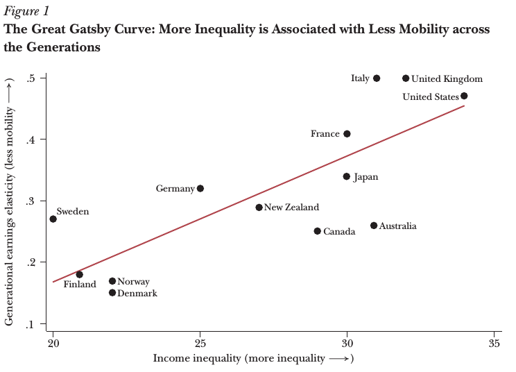
US vs Canada
- The US intergenerational elasticity is twice that of Canada
- On average, Americans are much more likely to have similar income as their parents
- This is mostly driven by high and low income, middle income mobility is the same as Canada


Polarization and mobility
- Jobs that require "some" skills are becoming more scarce
- Most jobs require a lot of skills, or few skills
- It is more costly to cross the "skill divide"
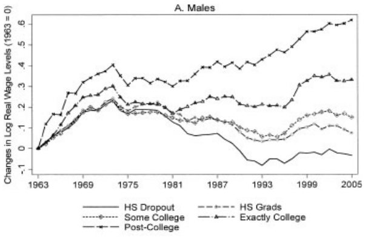
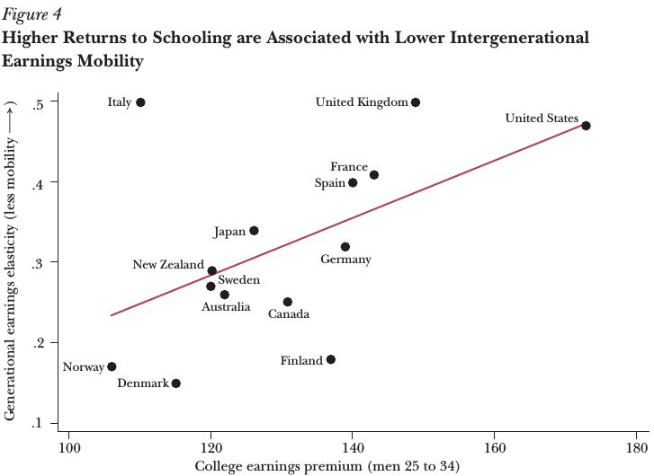
Education and mobility
- Highly educated parents are rewarded for their education
- They are able to spend more on their children's education
- Lower income families may not be able to invest enough to get over the skill gap

Other factors
- Parental connections
- Peers and environment
- Expectations/disenfranchisement
Inequality and segregation
- Diverging top incomes might allow wealthy to move away from lower income neighbors
- Sorting into communities based on income
- Access to services, education, labor market connections, differ across communities
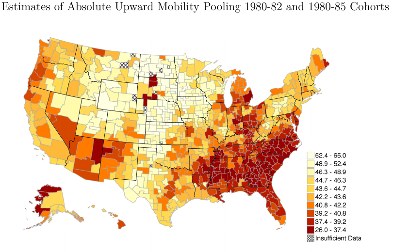

Parental connections
- Parents are able to use their labor market connections to get jobs for their children
- The strength/status of labor market connections will influence mobility for children
- A high-income parent can use their connections at their firms to get their children high-income jobs
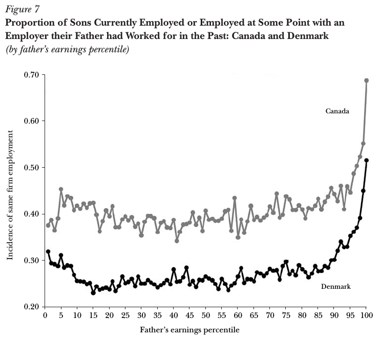
Peers and environment
- Peers may have an influence on labor market "trajectories"
- Aspirations/expectations can be formed by peers and environment
- Quality of teachers and community resources can affect educational attainment
Determining causality
- There is a strong correlation between childhood community and education/wages
- Does not imply causation
- People may sort themselves into communities based on characteristics
- These characteristics may be passed down to children
Moving to opportunity program
- Program administered by Department of Housing and Urban Development
- Families in high-poverty public housing were randomly selected to receive a voucher to move to lower poverty neighborhoods
- Since vouchers were assigned randomly, differences observed after the move can be causally attributed to neighborhood effects
- Effects should be stronger for children who move younger
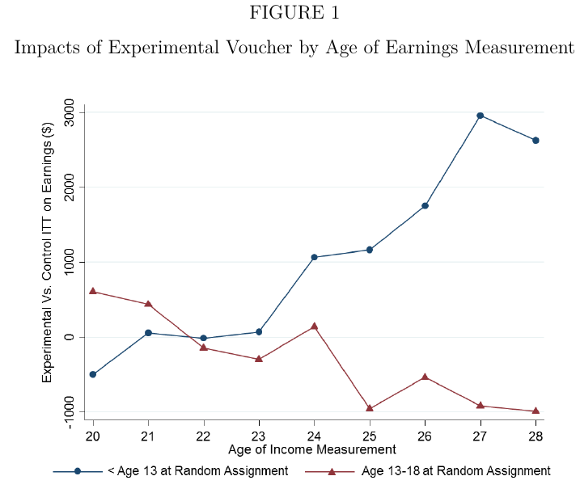
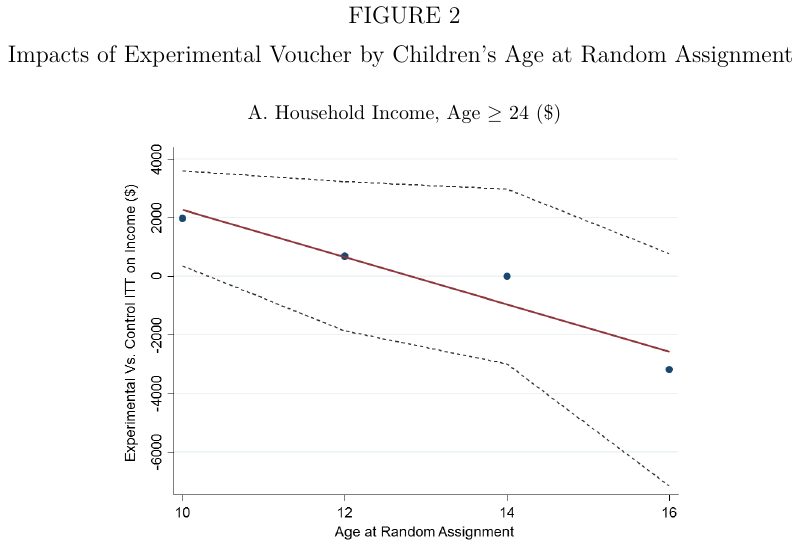
Parental influence
- It could be that parents earn more in high-income neighborhoods, use increase in earnings to pay for more child education
- Data suggest that parental earnings do not change as a result of the voucher
- The effect is mostly through children's direct exposure to lower-poverty neighborhoods
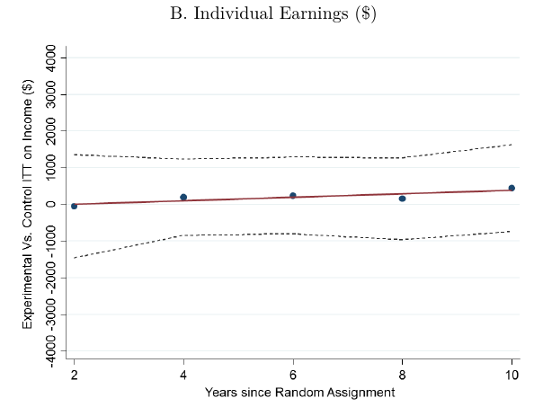
Program participation
- Parents in the Moving to Opportunity program decide whether or not to use voucher
- Parents who use voucher might be different from parents who don't use voucher
- Voucher use might be correlated with child performance
- What happens when people are forced to move?
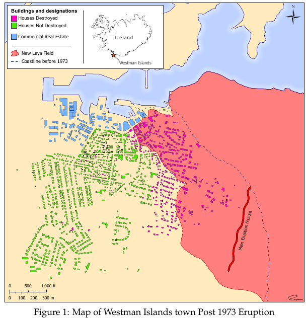
Mobility shocks
- People under 25 who were forced to move saw their incomes increase as a result
- No effect/negative effect for older cohorts
- Younger cohorts also received 3.6 more years of schooling than their peers
- Children of people who were forced to move received 4.7 additional years of schooling
Expectations
- People's expectations of future success may be a function of environment
- Low-income students in high-inequality communities might feel "economic despair"
- If students feel opportunities are out of reach, they might underinvest in education
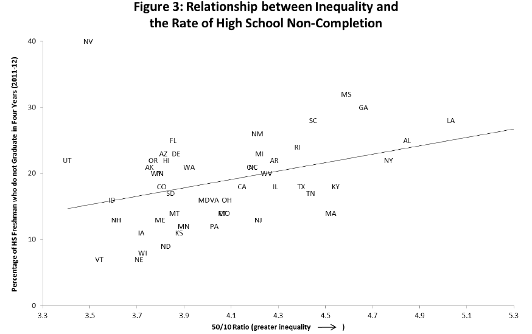
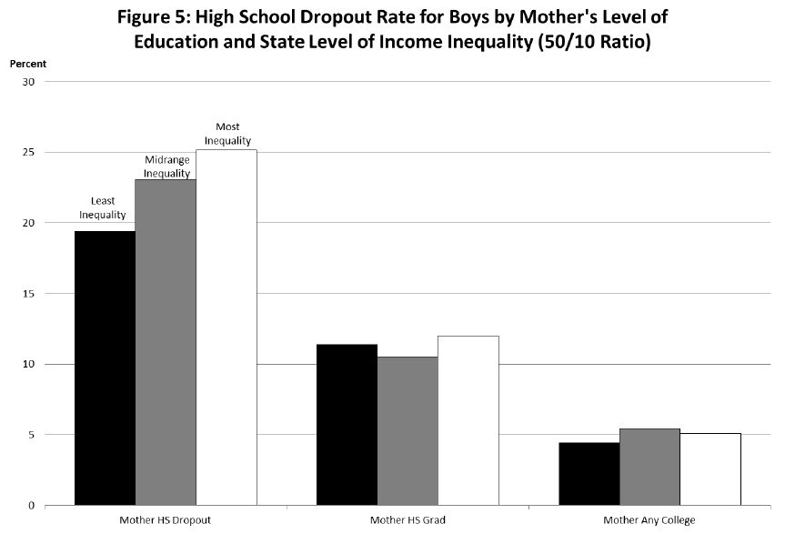
Summary
- Inequality can be passed down through generations
- Parents and children in low income groups underinvest in education
- This is due to lower returns on education, peer/environment effects, expectations
- Inequality is not self-correcting — otherwise able workers are not contributing to their full potential